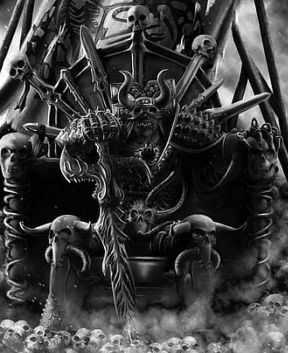

Dossier interdit 667.M41
Parmi les puissances du Warp, Khorne est sans doute celle que les faibles comprennent le plus vite et le plus mal. Ils croient y voir une simple divinité de guerre. Ils se trompent. Khorne n’est pas la guerre ordonnée des stratèges ni l’honneur des soldats morts à leur poste. Il est la rage nue, le massacre sans frein, la fureur qui broie toute pensée jusqu’à ne laisser subsister que le besoin de frapper encore.
Là où son influence s’étend, la discipline se déchire. Les lignes de commandement se dissolvent dans les cris. La colère la plus ancienne, la plus animale, remonte à la surface. Ce qui relevait encore du devoir se change en soif. Ce qui relevait de la haine se change en culte.

Les serviteurs de Khorne ne cherchent ni compromis, ni domination subtile, ni victoire durable. Ils cherchent le choc. Le heurt des corps, l’impact du métal, l’instant précis où l’ennemi comprend qu’il ne survivra pas à la minute suivante. Pour eux, le champ de bataille n’est pas un lieu d’opération. C’est un autel.
Ses légions démoniaques et ses adorateurs mortels diffèrent par la forme, mais rarement par l’intention. Tous avancent vers le carnage comme d’autres marcheraient vers la rédemption. Le sang versé n’est pas une conséquence de leur passage. Il est leur objectif, leur langage, leur offrande.
Le plus inquiétant n’est pas leur brutalité. La brutalité est visible. Le plus inquiétant est la facilité avec laquelle cette influence se propage. Une guerre prolongée. Un siège devenu trop long. Une troupe abandonnée à la faim, à la peur et à la colère. Il en faut parfois très peu pour que la violence nécessaire se change en violence désirée.
C’est ainsi que Khorne gagne du terrain. Non par la persuasion délicate ni par la corruption lente des mots, mais par l’évidence brutale de l’instinct. Il parle directement à ce qu’il y a de plus bas dans l’homme. Il promet la force sans retenue, la haine sans doute, la destruction sans remords.
Ses champions comptent parmi les ennemis les plus terrifiants que l’Imperium puisse affronter. Ils ne reculent pas. Ils ne négocient pas. Ils ne détournent jamais le regard d’une mise à mort possible. Leur corps n’est souvent plus qu’un réceptacle de cicatrices, d’armures soudées à la chair et de bénédictions qui ressemblent à des mutilations glorieuses.
Sur le terrain, leurs offensives sont d’une simplicité atroce. Aller de l’avant. Briser. Ouvrir. Décapiter. Recommencer. Là où d’autres puissances du Chaos troublent l’esprit ou gangrènent la matière, Khorne préfère laisser derrière lui des monceaux de cadavres assez hauts pour parler à sa place.
Ses démons incarnent cette vérité avec une pureté écœurante. Créatures de muscles, de cornes, de crocs et de lames, ils se jettent dans la mêlée avec une avidité si totale qu’elle semble supprimer jusqu’à l’idée de survie. Ils ne vivent que pour tuer, et s’ils disparaissent, c’est dans la promesse de revenir là où le prochain massacre leur ouvrira une brèche.
Toute force soupçonnée d’être touchée par l’influence de Khorne doit être surveillée avec la plus grande sévérité. Une agressivité excessive. Une exaltation anormale dans le combat. Un goût croissant pour l’exécution inutile. Une fascination pour les trophées sanglants. Rien de cela ne doit être toléré. Ce qui commence comme une dérive morale finit souvent en autel de chair.
Il faut comprendre ceci. Khorne n’élève pas ses fidèles. Il les vide. Il les dépouille jusqu’à ce qu’il ne reste plus qu’un instrument hurlant, assez fort pour massacrer, trop mutilé pour penser, et déjà condamné à adorer la prochaine hécatombe comme une révélation.
Fin de l’extrait. Toute manifestation relevant de Khorne doit être traitée comme menace extrême de niveau purge immédiate.